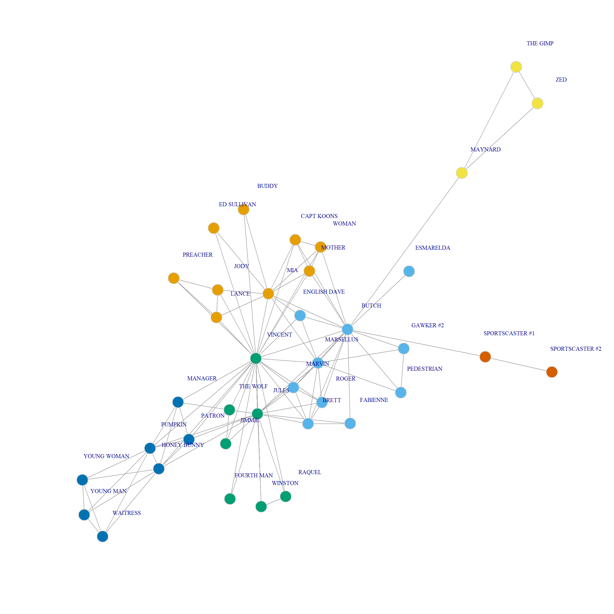

Assigning Nodes to Multiple Communities
In the previous handout, we examined various approaches to community and dense subgraph detection. What they all have in common is they assign nodes into non-overlapping groups. That is, nodes are either in one group or another but cannot belong to multiple groups at once. While this may make sense for a lot of substantive settings, it might not make sense for other ones, where multiple group memberships are normal (e.g., think of high school).
Detecting Overlapping Communities
Methodologically, overlapping community detection methods are not as well-developed as classical community detection methods. Here, we review one simple an intuitive approach that combines the idea of clustering nodes by computing a quantity on the links but instead of computing a rank order (like Newman and Girvan’s edge betweenness), we compute pairwise similarities between links like we did in handout 5. We then cluster the links using standard hierarchical clustering methods, which because nodes are incident to many links results in a multigroup clustering of the nodes for free. This approach is called link clustering (Ahn, Bagrow, and Lehmann 2010).
Let’s see how it works.
First we load data from an undirected graph:
And we plot:

The Pulp Fiction Movie Network.
The key idea behind link clustering is that similar links should be assigned to the same clusters. How do we compute the similarity between links?
Measuring Edge Similarity
According to Ahn, Bagrow, and Lehmann (2010) two links \(e_{ik}\) and \(e_{jk}\) are similar if they share a node \(v_k\) and the other two nodes incident to each link (\(v_i, v_k\)) are themselves similar. To measure the similarity between these two nodes, we can use any of the off-the-shelf vertex similarity measures that we have seen in action, like Jaccard, cosine, or Dice.
The first step is thus to build a link by link similarity matrix based on this idea. The following function loops through each pair of links in the graph and computes the similarity between two links featuring a common node \(v_k\) based on the Jaccard vertex similarity of the two other nodes:
edge.sim <- function(x) {
el <- as_edgelist(x)
A <- as.matrix(as_adjacency_matrix(x))
S <- A %*% A #shared neighbors
d <- degree(x)
E <- nrow(el)
E.sim <- matrix(0, E, E)
for (e1 in 1:E) {
for (e2 in 1:E) {
if (e1 < e2 & sum(as.numeric(intersect(el[e1,], el[e2,])!="0"))==1) {
v <- setdiff(union(el[e1,], el[e2,]), intersect(el[e1,], el[e2,]))
E.sim[e1, e2] <- S[v[1], v[2]]/(S[v[1], v[2]] + d[v[1]] + d[v[2]])
E.sim[e2, e1] <- S[v[1], v[2]]/(S[v[1], v[2]] + d[v[1]] + d[v[2]])
}
}
}
return(round(E.sim, 3))
}The function takes the graph as input and returns an inter-link similarity matrix of dimensions \(E \times E\) where \(E\) is the number of edges in the graph:
[,1] [,2] [,3] [,4] [,5] [,6] [,7] [,8] [,9] [,10]
[1,] 0.000 0.238 0.238 0.167 0.000 0.000 0.250 0.000 0.000 0.000
[2,] 0.238 0.000 0.294 0.139 0.000 0.000 0.179 0.000 0.000 0.000
[3,] 0.238 0.294 0.000 0.139 0.000 0.000 0.179 0.000 0.000 0.000
[4,] 0.167 0.139 0.139 0.000 0.000 0.100 0.192 0.000 0.000 0.000
[5,] 0.000 0.000 0.000 0.000 0.000 0.217 0.000 0.000 0.000 0.000
[6,] 0.000 0.000 0.000 0.100 0.217 0.000 0.000 0.000 0.000 0.000
[7,] 0.250 0.179 0.179 0.192 0.000 0.000 0.000 0.143 0.111 0.167
[8,] 0.000 0.000 0.000 0.000 0.000 0.000 0.143 0.000 0.143 0.111
[9,] 0.000 0.000 0.000 0.000 0.000 0.000 0.111 0.143 0.000 0.200
[10,] 0.000 0.000 0.000 0.000 0.000 0.000 0.167 0.111 0.200 0.000We can then transform the link similarities into distances, and cluster them:
The resulting dendrogram looks like this:
The leaves of the dendrogram (bottom-most objects) represent each link in the graph (\(E = 102\) in this case), and the clusters are “link communities” (Ahn, Bagrow, and Lehmann 2010).
Clustering Nodes
As we noted, because it is the links that got clustered, the nodes incident to each link can go to more than one cluster (because nodes with degree \(k>1\) will be incident to multiple links).
The following function uses the dendrogram information to return a list of node assignments to multiple communities, controlled by the parameter k:
create.clus <- function(x, k) {
library(dendextend)
link.clus <- cutree(x, k = k)
link.dat <- data.frame(as_edgelist(g), link.clus)
clus.list <- list()
for (i in 1:max(link.clus)) {
sub.dat <- link.dat[link.dat$link.clus == i, ]
clus.list[[i]] <- unique(c(sub.dat[, 1], sub.dat[, 2]))
}
return(clus.list)
}Let’s see the list with twelve overlapping communities:
[[1]]
[1] "BRETT" "GAWKER #2" "JULES" "MARSELLUS" "MARVIN"
[6] "PEDESTRIAN" "ROGER" "VINCENT"
[[2]]
[1] "BRETT" "FABIENNE" "MARVIN" "SPORTSCASTER #1"
[5] "JIMMIE" "RAQUEL" "ROGER" "JULES"
[9] "SPORTSCASTER #2" "THE WOLF" "WINSTON"
[[3]]
[1] "BRETT" "FOURTH MAN" "RAQUEL" "THE WOLF" "HONEY BUNNY"
[6] "JIMMIE" "JULES" "MANAGER" "MARVIN" "PATRON"
[11] "PUMPKIN" "ROGER" "VINCENT" "WINSTON"
[[4]]
[1] "BUDDY" "JODY" "LANCE" "BUTCH" "CAPT KOONS"
[6] "ED SULLIVAN" "ENGLISH DAVE" "MARSELLUS" "MIA" "MOTHER"
[11] "WOMAN" "VINCENT"
[[5]]
[1] "BUDDY" "LANCE" "PREACHER" "CAPT KOONS" "ED SULLIVAN"
[6] "ENGLISH DAVE" "JODY" "MOTHER" "VINCENT" "WOMAN"
[[6]]
[1] "BRETT" "BUTCH" "ENGLISH DAVE" "CAPT KOONS"
[5] "ESMARELDA" "GAWKER #2" "JULES" "MARSELLUS"
[9] "PEDESTRIAN" "SPORTSCASTER #1" "FABIENNE" "MARVIN"
[13] "MAYNARD" "MOTHER" "ROGER" "VINCENT"
[17] "WOMAN"
[[7]]
[1] "FOURTH MAN" "JIMMIE" "BRETT" "HONEY BUNNY" "JULES"
[6] "MANAGER" "MARVIN" "PATRON" "PUMPKIN" "RAQUEL"
[11] "ROGER" "WINSTON" "THE WOLF"
[[8]]
[1] "HONEY BUNNY" "MANAGER" "PATRON" "PUMPKIN"
[[9]]
[1] "JODY" "LANCE" "PREACHER"
[[10]]
[1] "MAYNARD" "THE GIMP" "ZED"
[[11]]
[1] "CAPT KOONS" "MOTHER" "WOMAN"
[[12]]
[1] "HONEY BUNNY" "PUMPKIN" "WAITRESS" "YOUNG MAN" "YOUNG WOMAN"Because there are nodes that belong to multiple communities, the resulting actor by community ties form a two-mode network.
We can see re-construct this network from the list of community memberships for each node using this function:
Here’s the two mode matrix of characters by communities:
c1 c2 c3 c4 c5 c6 c7 c8 c9 c10 c11 c12
BRETT 1 1 1 0 0 1 1 0 0 0 0 0
GAWKER #2 1 0 0 0 0 1 0 0 0 0 0 0
JULES 1 1 1 0 0 1 1 0 0 0 0 0
MARSELLUS 1 0 0 1 0 1 0 0 0 0 0 0
MARVIN 1 1 1 0 0 1 1 0 0 0 0 0
PEDESTRIAN 1 0 0 0 0 1 0 0 0 0 0 0
ROGER 1 1 1 0 0 1 1 0 0 0 0 0
VINCENT 1 0 1 1 1 1 0 0 0 0 0 0
FABIENNE 0 1 0 0 0 1 0 0 0 0 0 0
SPORTSCASTER #1 0 1 0 0 0 1 0 0 0 0 0 0
JIMMIE 0 1 1 0 0 0 1 0 0 0 0 0
RAQUEL 0 1 1 0 0 0 1 0 0 0 0 0
SPORTSCASTER #2 0 1 0 0 0 0 0 0 0 0 0 0
THE WOLF 0 1 1 0 0 0 1 0 0 0 0 0
WINSTON 0 1 1 0 0 0 1 0 0 0 0 0
FOURTH MAN 0 0 1 0 0 0 1 0 0 0 0 0
HONEY BUNNY 0 0 1 0 0 0 1 1 0 0 0 1
MANAGER 0 0 1 0 0 0 1 1 0 0 0 0
PATRON 0 0 1 0 0 0 1 1 0 0 0 0
PUMPKIN 0 0 1 0 0 0 1 1 0 0 0 1
BUDDY 0 0 0 1 1 0 0 0 0 0 0 0
JODY 0 0 0 1 1 0 0 0 1 0 0 0
LANCE 0 0 0 1 1 0 0 0 1 0 0 0
BUTCH 0 0 0 1 0 1 0 0 0 0 0 0
CAPT KOONS 0 0 0 1 1 1 0 0 0 0 1 0
ED SULLIVAN 0 0 0 1 1 0 0 0 0 0 0 0
ENGLISH DAVE 0 0 0 1 1 1 0 0 0 0 0 0
MIA 0 0 0 1 0 0 0 0 0 0 0 0
MOTHER 0 0 0 1 1 1 0 0 0 0 1 0
WOMAN 0 0 0 1 1 1 0 0 0 0 1 0
PREACHER 0 0 0 0 1 0 0 0 1 0 0 0
ESMARELDA 0 0 0 0 0 1 0 0 0 0 0 0
MAYNARD 0 0 0 0 0 1 0 0 0 1 0 0
THE GIMP 0 0 0 0 0 0 0 0 0 1 0 0
ZED 0 0 0 0 0 0 0 0 0 1 0 0
WAITRESS 0 0 0 0 0 0 0 0 0 0 0 1
YOUNG MAN 0 0 0 0 0 0 0 0 0 0 0 1
YOUNG WOMAN 0 0 0 0 0 0 0 0 0 0 0 1And the matrix of inter-community ties based on shared characters:
c1 c2 c3 c4 c5 c6 c7 c8 c9 c10 c11 c12
c1 8 4 5 2 1 8 4 0 0 0 0 0
c2 4 11 8 0 0 6 8 0 0 0 0 0
c3 5 8 14 1 1 5 13 4 0 0 0 2
c4 2 0 1 12 9 7 0 0 2 0 3 0
c5 1 0 1 9 10 5 0 0 3 0 3 0
c6 8 6 5 7 5 17 4 0 0 1 3 0
c7 4 8 13 0 0 4 13 4 0 0 0 2
c8 0 0 4 0 0 0 4 4 0 0 0 2
c9 0 0 0 2 3 0 0 0 3 0 0 0
c10 0 0 0 0 0 1 0 0 0 3 0 0
c11 0 0 0 3 3 3 0 0 0 0 3 0
c12 0 0 2 0 0 0 2 2 0 0 0 5And we can visualize the nodes connected to multiple communities as follows:
library(RColorBrewer)
set.seed(45)
g <- graph_from_biadjacency_matrix(B)
V(g)$type <- bipartite_mapping(g)$type
V(g)$shape <- ifelse(V(g)$type, "square", "circle")
V(g)$color <- c(rep("orange", 38),
c(brewer.pal(8, "Paired"), brewer.pal(4, "Dark2")))
E(g)$color <- "lightgray"
plot(g,
vertex.size=5, vertex.frame.color="lightgray",
vertex.label = V(g)$name,
vertex.label.dist=1, vertex.label.cex = 1)